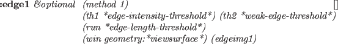

１枚の画像データは、pixel-imageクラスで表現される。pixel-imageは、
バイト型データを要素とする2次元配列である。それぞれのデータの内容は、
アプリケーションに依存している。一般的にピクセルの明るさを表現するために
使われるが、エッジ輝度や微分方向やカラー輝度やbarグラフのようなものにも用いることができる。
pixel-image [クラス]
:super array
:slots xpicture display-lut histogram
brightness-distribution0
brightness-distribution1
brightness-covariance
-
- pixel-imageは、xwindowへの表示機能を持つ2次元の行列である。
pixelの変換は、display-lutによって実現され、
その結果の画像はxpictureに蓄積される。
主な軸は縦方向にとる。(x,y)のimgのピクセルは
(aref img y x)でアクセスすることができる。
:width [メソッド]
-
- ピクセル画像の横サイズを返す。
:height [メソッド]
-
- ピクセル画像の縦サイズを返す。
:size [メソッド]
-
- 配列の大きさを返す。
:transpose &optional (result (instance (class self) :init dim0 dim1)) [メソッド]
-
-
x軸とy軸を交換する。
:map-picture lut &optional (result (send self :duplicate)) [メソッド]
-
-
この画像をlutで変換し、その画像データをresultに蓄積する。
:map fn &optional (result (send self :duplicate)) [メソッド]
-
-
この画像のすべてのピクセルにfnを適用して、
resultのピクセルに置く。
:brightest-pixel [メソッド]
-
- この画像の一番明るいピクセル値を見つける。
:darkest-pixel [メソッド]
-
- この画像の一番暗いピクセル値を見つける。
:average-pixel [メソッド]
-
-
この画像のすべてのピクセルの平均輝度を計算する。
:halve &optional simage [メソッド]
-
-
半分の大きさの画像に縮小したピクセル画像を返す。
:subimage x y subwidth subheight [メソッド]
-
-
この画像に(x,y)を左上角とし、幅がsubwidthで高さがsubheight
である四角形を切り出す。
その画像の原点は(x,y)に置かれる。
:subimageは、この四角形で囲まれた画像を表現するピクセル画像を作る。
:xpicture &optional lut [メソッド]
-
-
この画像をlutを用いて変換し、xpictureに設定する。
:display-lut &optional newlut [メソッド]
-
-
display-lutにルックアップテーブルnewlutを設定する。
その後、このルックアップテーブルを用いて画像を変換し、
xpictureに設定する。
:display (xwin geometry:*viewsurface*) [メソッド]
-
-
:putimageを用いてxwinで指定されるXwindowにこの画像を
表示する。
それぞれのピクセル値はXのカラーマップを参照する。
希望する表現を得るためには、このピクセル画像を固有のLUTで
変換すべきである。
:duplicate [メソッド]
-
-
この画像オブジェクトと同じ幅と高さを持つ同じクラスの
インスタンスを作る。ピクセルデータはコピーされない。
:copy-from src [メソッド]
-
-
srcで指定される他の画像からピクセルデータをコピーする。
srcとこの画像は同一の次元でなければならない。
:hex &optional (x 0) (y 0) (w 16) (h 16) (strm t) [メソッド]
-
-
四角領域で示されるピクセルデータを16進数フォーマットで表示する。
:hex1 &optional (x 0) (y 0) (w 64) (h 16) (strm t) [メソッド]
-
-
四角領域で示されるピクセルデータを16進数フォーマットで表示する。
:prin1 strm &rest msg [メソッド]
-
-
このピクセル画像を名前と次元とともに表示する。
:init w h &optional imgvec [メソッド]
-
-
幅w、高さhを持つピクセル画像を初期化する。
:amplify rate &optional (result (send self :duplicate) [メソッド]
-
-
rateをそれぞれのピクセル値に掛ける。
:compress-gray-scale levels &optional result &aux pict2 [メソッド]
-
-
この画像のピクセル値を0からlevelsまでの範囲に変換をし、
その変換された画像を返す。
:lut lut1 &optional (result (send self :duplicate)) [メソッド]
-
-
ルックアップテーブルlut1を用いてこの画像を変換し、
その変換された画像を返す。
:lut2 lut1 lut2 &optional (result (send self :duplicate)) [メソッド]
-
-
lut1とlut2を連結したルックアップテーブルを用いてこの画像を
変換し、その変換された画像を返す。
:histogram [メソッド]
-
-
この画像のそれぞれのピクセル値の発生回数を数え、そのヒストグラム
を整数ベクトル表現で返す。
:brightness-distribution [メソッド]
-
-
明るさの分散を返す。
:optimum-threshold [メソッド]
-
-
この画像の明るさの分散値が最大となっている階調を返す。
:project-x [メソッド]
-
-
同じx座標のピクセル値をすべて加算し、これらの値のベクトルを返す。
:project-y [メソッド]
-
-
同じy座標のピクセル値をすべて加算し、これらの値のベクトルを返す。
:digitize threshold &optional (val0 0) (val1 255) result [メソッド]
-
-
thresholdを用いてこの画像をval0とval1の２値画像に
変換する。
:and img2 [メソッド]
-
-
この画像とimg2のビット論理積をとり、処理した画像を返す。
:plot min max &optional color viewsurface [メソッド]
-
-
minとmaxの間の値を持つピクセルをすべてcolor(gc)
でviewsurfaceにプロットする。

-
- この画像のエッジを抽出し、Xwindow上にエッジ画像を表示する。
2014-08-28